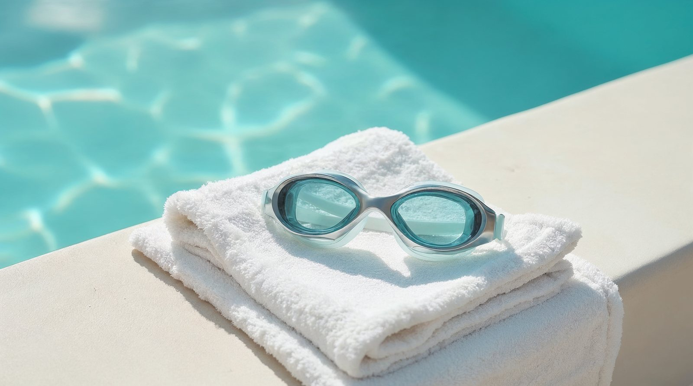
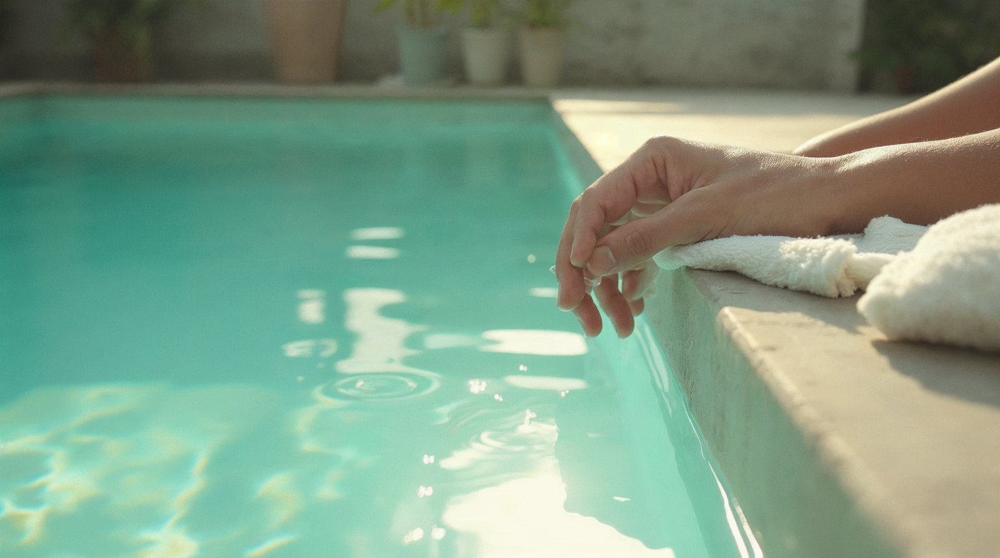
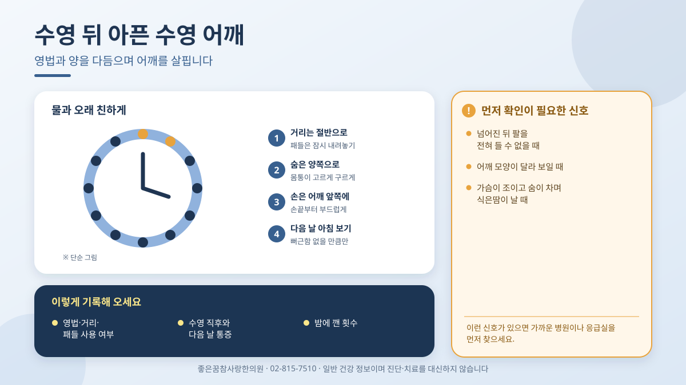

이종호 한의사 감수좋은꿈참사랑한의원 대표원장 (한의사 면허번호 19769)발행 2026-11-26 · 수정 2026-11-26
이 글의 차례
새벽 여섯 시, 동네 구민체육센터 수영장에 불이 켜집니다. 레인을 따라 자유형으로 몇 바퀴를 돌고 나면 몸이 가벼워지고 하루를 시작할 힘이 생깁니다. 그런데 언제부턴가 샤워실에서 머리를 감으려고 팔을 올리면 어깨 앞쪽이 찌릿하고, 밤에 그쪽으로 돌아누우면 욱신거립니다.
수영은 관절에 부담이 적은 운동으로 알려져 있어서, 수영을 하다 어깨가 아프다는 사실에 놀라시는 분이 많습니다. 물이 몸무게를 받쳐 주니 무릎과 허리에는 부담이 적지만, 그 대신 물을 밀어내는 일은 거의 어깨가 맡습니다.
한 번 수영을 갈 때 팔을 돌리는 횟수를 세어 보면 수백 번에서 천 번을 훌쩍 넘기도 합니다. 같은 동작이 이렇게 많이 반복되니, 작은 자세 차이도 쌓이면 어깨에 부담으로 돌아옵니다. 흔히 '수영 어깨'라고 부르는 불편이 이렇게 생깁니다.
진료실에서 저는 어디가 아픈지와 함께 "어떤 영법을, 몇 미터쯤, 일주일에 몇 번 하시는지"를 꼭 여쭙니다. 어깨 자체를 보는 것만큼 수영하는 방식을 아는 것이 중요하기 때문입니다.
수영 어깨는 어떤 상태를 말하나요?
수영 어깨는 하나의 병명이라기보다, 수영을 반복하며 생기는 어깨 통증을 두루 일컫는 말입니다. 가장 흔한 것은 팔을 들어 올릴 때 어깨 힘줄이 뼈 아래에서 눌리며 아픈 충돌 증상과, 그 힘줄 자체가 지쳐 붓고 욱신거리는 힘줄염입니다.
아픈 자리는 대개 어깨 앞쪽과 바깥쪽입니다. 팔을 머리 위로 올리는 중간쯤에서 찌릿하다가 끝까지 올리면 오히려 덜하거나, 뒷주머니에 손을 넣는 동작에서 앞쪽이 당긴다고 말씀하시는 분이 많습니다.
처음에는 수영이 끝난 뒤에만 뻐근하다가, 점점 수영하는 도중에도 아프고, 더 지나면 일상에서 옷을 입거나 선반 위 물건을 꺼낼 때도 불편해집니다. 이 흐름 가운데 어디쯤에 계신지를 아는 것이 관리 방향을 정하는 출발점입니다.
왜 물속에서 하는 운동인데 어깨가 아플까요
자유형, 접영, 배영은 모두 팔을 머리 위로 크게 돌리며 물을 잡아당기는 동작입니다. 손이 물에 들어가는 순간 어깨는 가장 높이 들려 있고, 이때 어깨 힘줄이 뼈 사이 좁은 틈에서 눌리기 쉽습니다. 이 동작이 한 번에 수백 번 반복됩니다.
호흡하는 쪽도 영향을 줍니다. 늘 같은 쪽으로만 숨을 쉬면 몸이 한쪽으로 덜 돌아가고, 반대쪽 팔이 무리하게 넘어가며 물을 잡게 됩니다. 실제로 숨을 쉬지 않는 쪽 어깨가 더 아프다는 분이 적지 않습니다.
손이 물에 들어가는 위치가 몸 한가운데를 넘어가거나, 엄지부터 세게 꽂아 넣는 습관이 있으면 어깨가 안쪽으로 비틀린 채 힘을 쓰게 됩니다. 몸통이 충분히 구르지 않고 팔로만 물을 당기는 것도 어깨 부담을 키웁니다.
평소 자세도 함께 봅니다. 책상 앞에서 하루를 보내 등이 둥글게 말리고 어깨가 앞으로 나와 있으면, 팔을 머리 위로 올릴 공간 자체가 좁아집니다. 그 상태에서 거리를 갑자기 늘리거나 패들을 끼고 연습하면 불편이 시작되기 쉽습니다.
오십견, 목디스크와는 어떻게 다른가요
오십견은 어깨가 전체적으로 굳어, 남이 팔을 들어 올려 줘도 잘 올라가지 않는 것이 특징입니다. 수영 어깨는 대개 아프긴 해도 팔이 끝까지 올라가고, 특정 높이에서만 걸리는 느낌이 있습니다. 어느 쪽인지에 따라 움직임을 늘리는 방법이 달라집니다.
목에서 시작된 통증은 어깨 위쪽에서 팔을 타고 손끝까지 저림이 내려가거나, 고개를 뒤로 젖히고 돌릴 때 팔이 더 저린 경우가 많습니다. 수영 어깨는 고개 움직임보다 팔을 쓰는 동작과 더 가깝게 연결됩니다.
힘줄이 찢어진 경우에는 팔을 옆으로 들어 버티는 힘이 눈에 띄게 약하고, 밤에 아파서 자주 깹니다. 이럴 때는 영상 검사로 힘줄 상태를 확인하는 것이 먼저입니다. 비슷해 보여도 나눠 보는 이유가 여기에 있습니다.
영법마다 어깨 부담은 어떻게 다른가요
자유형은 가장 많이 하는 영법이라 그만큼 수영 어깨도 자유형에서 가장 흔하게 생깁니다. 손이 물에 들어가 앞으로 뻗는 순간과, 팔을 물 밖으로 꺼내 앞으로 넘기는 순간에 어깨 앞과 옆이 걸린다는 분이 많습니다.
접영은 두 팔을 동시에 크게 돌리고 물을 강하게 당기기 때문에 어깨에 걸리는 힘이 가장 큰 편입니다. 접영을 배우기 시작한 시기에 어깨가 아파 오시는 분이 많은 것도 이 때문입니다. 허리를 크게 쓰는 동작이라 허리 뻐근함이 함께 오기도 합니다.
배영은 팔이 머리 위에서 뒤로 넘어가면서 어깨 앞쪽이 늘어나는 자세가 반복됩니다. 어깨 앞쪽이 원래 불편하거나 한 번 빠졌던 적이 있는 분은 배영에서 불안한 느낌을 받기 쉽습니다. 평영은 상대적으로 어깨 부담이 적지만 무릎 안쪽이 시큰해지는 경우가 있습니다.
강습반을 옮기거나 수영을 다시 시작할 때
진료실에서 보면 어깨가 아프기 시작한 시점이 강습반을 올린 무렵, 혹은 몇 달 쉬었다가 다시 다니기 시작한 무렵과 겹치는 경우가 많습니다. 반이 올라가면 거리와 속도가 함께 늘고, 쉬었다가 돌아오면 몸은 예전만 못한데 마음은 예전 기록을 기억합니다.
그래서 반을 옮기거나 다시 시작하는 첫 몇 주는 '조금 아쉬운 정도'에서 멈추는 연습이 필요합니다. 옆 레인 사람을 따라가고 싶은 마음이 들어도, 어깨가 새로운 양에 익숙해질 시간을 먼저 주는 것이 길게 보면 더 많이 헤엄치는 길입니다.
스스로 해 볼 수 있는 간단한 점검
거울 앞에 서서 양팔을 옆으로 천천히 들어 올려 보세요. 중간 어디쯤에서 찌릿한지, 끝까지 올라가는지, 양쪽 날개뼈가 같은 높이로 움직이는지 봅니다. 한쪽 어깨가 먼저 으쓱 올라간다면 그쪽 어깨가 애쓰고 있다는 신호일 수 있습니다.
벽에 등을 대고 서서 뒤통수, 날개뼈, 엉덩이를 벽에 붙여 보세요. 이 자세가 어렵다면 평소 등이 많이 말려 있는 것입니다. 그 상태로 팔을 벽을 따라 올려 보면, 어깨가 얼마나 편하게 올라가는지 감이 잡힙니다.
수영 중에는 어느 동작에서 아픈지 떠올려 보세요. 손이 물에 들어갈 때인지, 물을 당겨 뒤로 밀 때인지, 팔을 물 밖으로 꺼내 앞으로 돌릴 때인지에 따라 살펴볼 힘줄과 고칠 자세가 달라집니다.
먼저 이렇게 여쭙니다
- 주로 어떤 영법을, 한 번에 몇 미터쯤, 일주일에 몇 번 하시나요?
- 최근 거리나 횟수를 늘리셨거나 패들·핀을 쓰기 시작하셨나요?
- 숨은 어느 쪽으로 쉬시고, 어느 쪽 어깨가 아프신가요?
- 수영 중, 수영 직후, 다음 날, 밤 가운데 언제 가장 아프신가요?
- 팔을 옆으로 들어 버티는 힘이 예전보다 약해진 느낌이 있나요?
- 하루에 앉아 있는 시간과 일하는 자세는 어떠신가요?
수영 강습을 받고 계시다면 강사에게서 들은 자세 지적도 알려 주세요. "팔이 몸 가운데로 들어온다", "몸이 덜 돈다" 같은 이야기가 어깨를 살피는 데 큰 단서가 됩니다. 수영하는 모습을 짧게 찍은 영상이 있다면 함께 보셔도 좋습니다. 손이 물에 들어가는 위치와 몸통이 도는 정도가 한눈에 보입니다.
일상에서 먼저 해 볼 수 있는 것
통증이 시작됐다면 수영을 아예 멈추기보다 양을 줄이고 방식을 바꿔 보는 것부터 권합니다. 아프게 하는 영법을 줄이고, 아프지 않은 범위에서 짧게 끊어 하는 것이 어깨를 쉬게 하면서도 몸의 리듬을 지키는 길입니다.
- 거리를 평소의 절반 정도로 줄이고, 패들은 잠시 내려놓기
- 숨을 양쪽으로 번갈아 쉬어 몸통이 고르게 구르게 하기
- 손은 어깨 너비 앞쪽으로, 손끝부터 부드럽게 넣기
- 아픈 영법 대신 킥 연습이나 평영을 섞어 보기
- 수영 전 팔 돌리기와 날개뼈 모으기로 5분 이상 몸 데우기
- 수영 뒤 가슴 앞쪽을 문틀에 대고 가볍게 늘리기
책상 앞에서는 한 시간에 한 번 일어나 가슴을 펴고 날개뼈를 뒤로 모아 주세요. 등이 펴지면 어깨가 올라갈 공간이 넓어집니다. 모니터를 눈높이에 맞추는 것만으로도 어깨가 앞으로 말리는 시간을 줄일 수 있습니다.
밤에 아픈 쪽으로 눕기 어렵다면 반대쪽으로 누워 아픈 팔 아래에 베개 하나를 안고 주무셔 보세요. 팔이 몸 앞으로 떨어지지 않게 받쳐 주면 힘줄이 덜 당겨 잠이 한결 편할 수 있습니다.
수영장 물은 생각보다 차가울 때가 많습니다. 탈의실에서 바로 물에 뛰어들기보다 샤워로 몸을 먼저 데우고, 물속에서도 처음 몇 바퀴는 천천히 도는 것이 어깨를 아끼는 방법입니다. 수영이 끝난 뒤에는 젖은 채 오래 있지 말고 어깨를 따뜻하게 감싸 주세요.

다시 거리를 늘릴 때는 어떻게 하나요
아프지 않게 수영할 수 있는 거리가 생기면, 일주일에 한 번 정도 그 거리를 조금씩만 늘려 갑니다. 한꺼번에 많이 늘리면 힘줄이 다시 지치기 쉽습니다. 늘린 다음 날 어깨가 어땠는지를 보고 그다음 걸음을 정합니다.
어깨를 안정시키는 작은 근육을 기르는 운동도 함께 하시면 좋습니다. 고무 밴드를 잡고 팔꿈치를 옆구리에 붙인 채 바깥으로 천천히 돌리기, 엎드려 팔을 Y자로 들어 올리기 같은 동작을 가볍게 시작해 보세요. 통증이 심해지면 멈춥니다.
강도 높은 연습은 가장 나중에 돌아옵니다. 접영과 패들, 빠른 인터벌은 어깨에 가장 큰 부담을 주므로, 편한 자유형으로 원래 거리를 무리 없이 소화할 수 있을 때 하나씩 더해 갑니다.
한의원에서 함께 살필 수 있는 경우
- 수영 뒤 어깨 앞이나 옆이 욱신거리는 일이 몇 주째 이어지는 경우
- 팔을 머리 위로 올리는 중간에 걸리는 느낌이 있는 경우
- 밤에 아픈 쪽으로 눕기 어려워 잠을 설치는 경우
- 어깨와 함께 목, 날개뼈 사이가 늘 뻐근한 경우
- 거리를 줄여도 어깨 불편이 좀처럼 줄지 않는 경우
좋은꿈참사랑한의원에 오시면 먼저 아래 '먼저 확인이 필요한' 신호가 없는지부터 봅니다. 그다음 맥을 짚고, 어깨의 움직임과 힘, 날개뼈와 등의 자세를 함께 살핍니다. 필요하다고 판단되면 초음파로 힘줄과 점액낭을 확인합니다.
진찰한 내용을 바탕으로 침, 약침, 물리치료 가운데 지금 상태에 맞는 것을 정합니다. 힘줄 통증이 오래 이어졌다면 체외충격파를, 등과 목의 자세가 함께 굳어 있다면 추나를 상의하기도 합니다. 한약을 상의할 때는 드시는 약을 확인한 뒤 신중히 정합니다.
수영을 언제, 얼마나 다시 늘릴지도 진료 때마다 함께 정합니다. 정형외과 진료를 받고 계신다면 그 진료와 나란히 가는 것으로 생각해 주시면 됩니다.
이렇게 기록해 오시면 상담이 쉬워집니다
- 수영한 날짜, 영법, 거리, 패들 사용 여부
- 수영 중, 직후, 다음 날 아침의 통증 정도
- 아픈 동작(팔 올리기, 뒤로 돌리기, 옆으로 눕기)
- 밤에 깬 횟수와 잠자는 자세
- 스트레칭이나 밴드 운동을 한 날 표시
간단히 "자유형 800, 다음 날 아침 뻐근 4점"처럼 적어 오셔도 충분합니다. 몇 주만 모여도 어깨가 버틸 수 있는 거리가 숫자로 보입니다.

물과 오래 친하게 지내려면
수영은 나이가 들어서도 오래 즐길 수 있는 좋은 운동입니다. 어깨가 보내는 신호를 일찍 알아차리고 영법과 양을 조금만 다듬으면, 대부분 물을 떠나지 않고도 어깨를 돌볼 방법이 있습니다.
아픈 어깨를 감싸고 수영을 억지로 이어 가다 보면 반대쪽 어깨나 목, 허리가 대신 애쓰다 함께 지치기도 합니다. 아픈 쪽을 아끼는 동안 다른 쪽이 무리하지 않는지도 살펴 주세요. 몸 한쪽의 불편이 다른 곳으로 번지기 전에 양을 조절하는 것이 결국 수영을 쉬는 기간을 줄이는 방법입니다.
수영 다음 날 아침 어깨 상태가 하나의 기준이 됩니다. 아침에 뻐근함이 남지 않을 만큼이 지금 어깨가 감당할 수 있는 양이라고 생각하시면 됩니다.
이번 주에는 숨을 양쪽으로 번갈아 쉬는 것 하나만 연습해 보세요. 다음에 오시면 어깨가 어느 높이까지 편하게 올라가는지 함께 확인해 보겠습니다.
이런 증상은 먼저 확인이 필요합니다
- 넘어지거나 부딪힌 뒤 팔을 전혀 들 수 없고 어깨 모양이 달라 보이는 경우
- 어깨 통증과 함께 가슴이 조이듯 아프고 숨이 차거나 식은땀이 나는 경우
이런 신호가 있으면 한의원보다 가까운 병원이나 응급실을 먼저 찾으세요.
함께 읽으면 좋은 글
- 팔을 들 때 어깨가 걸리듯 아픈 충돌증후군·회전근개 문제는 어떻게 살피나요?
- 어깨 앞쪽이 욱신거리고 팔을 앞으로 들 때 아픈 이두근 힘줄염은 어떻게 살피나요?
- 어깨가 아플 때 초음파로 무엇을 확인하고, 어떤 동작을 먼저 묻나요?
- 거북목과 라운드숄더는 집에서 어떤 스트레칭을 해 볼 수 있나요?
- 헬스장에서 어깨 운동을 한 뒤 어깨 앞쪽이 아플 때는 무엇을 먼저 확인하나요?

여쭙는 것
- 주로 어떤 영법을, 한 번에 몇 미터쯤, 일주일에 몇 번 하시나요?
- 최근 거리나 횟수를 늘리셨거나 패들·핀을 쓰기 시작하셨나요?
- 숨은 어느 쪽으로 쉬시고, 어느 쪽 어깨가 아프신가요?
생활에서 해 볼 것
- 거리를 평소의 절반 정도로 줄이고, 패들은 잠시 내려놓기
- 숨을 양쪽으로 번갈아 쉬어 몸통이 고르게 구르게 하기
- 손은 어깨 너비 앞쪽으로, 손끝부터 부드럽게 넣기
한의원에서 함께 살필 것
- 수영 뒤 어깨 앞이나 옆이 욱신거리는 일이 몇 주째 이어지는 경우
- 팔을 머리 위로 올리는 중간에 걸리는 느낌이 있는 경우
- 밤에 아픈 쪽으로 눕기 어려워 잠을 설치는 경우
먼저 확인이 필요한 신호
- 넘어지거나 부딪힌 뒤 팔을 전혀 들 수 없고 어깨 모양이 달라 보이는 경우
- 어깨 통증과 함께 가슴이 조이듯 아프고 숨이 차거나 식은땀이 나는 경우
한눈에 보는 표
| 구분 | 핵심 |
|---|---|
| 여쭙는 것 | 주로 어떤 영법을, 한 번에 몇 미터쯤, 일주일에 몇 번 하시나요? 최근 거리나 횟수를 늘리셨거나 패들·핀을 쓰기 시작하셨나요? |
| 생활에서 해 볼 것 | 거리를 평소의 절반 정도로 줄이고, 패들은 잠시 내려놓기 숨을 양쪽으로 번갈아 쉬어 몸통이 고르게 구르게 하기 |
| 한의원에서 함께 살필 것 | 수영 뒤 어깨 앞이나 옆이 욱신거리는 일이 몇 주째 이어지는 경우 팔을 머리 위로 올리는 중간에 걸리는 느낌이 있는 경우 |
| 먼저 확인이 필요한 신호 | 넘어지거나 부딪힌 뒤 팔을 전혀 들 수 없고 어깨 모양이 달라 보이는 경우 어깨 통증과 함께 가슴이 조이듯 아프고 숨이 차거나 식은땀이 나는 경우 |
자주 묻는 질문
어깨가 아픈데 수영을 완전히 쉬어야 하나요?
대부분은 완전히 쉬기보다 거리와 영법을 조절하는 쪽을 먼저 권합니다. 아프지 않은 범위에서 짧게 하고, 통증을 키우는 영법과 패들은 잠시 내려놓으세요.
평영은 어깨에 괜찮은가요?
평영은 팔을 머리 위로 크게 돌리지 않아 어깨 부담이 상대적으로 적은 편입니다. 다만 무릎이나 허리가 불편한 분은 평영 발차기가 맞지 않을 수 있어 함께 살펴봅니다.
수영 뒤 찜질은 어떻게 하나요?
수영 직후 욱신거리고 열감이 있다면 수건에 싼 차가운 찜질을 10~15분 해 보세요. 뻐근함이 주로 남는다면 따뜻한 샤워나 찜질이 편할 수 있습니다.
패들을 끼고 연습하면 어깨가 더 아픈가요?
패들은 물을 잡는 면적을 넓혀 어깨에 걸리는 힘을 키웁니다. 어깨가 불편할 때는 잠시 내려놓고, 다시 쓸 때도 짧은 거리부터 시작하시길 권합니다.
좋은꿈참사랑한의원은 재진 때 지난번 이야기부터 이어서 여쭙니다. 진료시간과 예약은 오시는 길에서 확인하세요.
어디서 상담받을 수 있나요?
좋은꿈참사랑한의원은 서울 동작구 만양로2길 2 신성빌딩 3층·5층(서울 동작구 상도동, 7호선 상도역 3번 출구 근처)에 있습니다. 한의사 3명(이종호 대표원장, 조영기 수석진료원장, 정원영 진료원장)이 진료합니다. 진료시간은 평일 09:30~20:00(점심 13:00~14:00), 토·일·공휴일 09:30~15:00이며, 방문 전 전화로 확인을 권합니다. 예약은 네이버 예약, 카카오톡 상담, 전화 02-815-7510로 받습니다.
이 글은 일반적인 건강 정보이며 개인의 진단이나 치료를 대신하지 않습니다. 증상이 있거나 복용 중인 약이 있다면 진료를 통해 확인하세요. 치료 효과는 개인마다 다를 수 있습니다.
작성 기준: 일반적으로 알려져 있는 건강 정보를 참고해 정리했습니다(대표원장 감수). 증상 기록은 1~2주 동안 하루 1회, 비슷한 시간에 적어 오시면 지난 상태와 비교하기 쉽습니다.